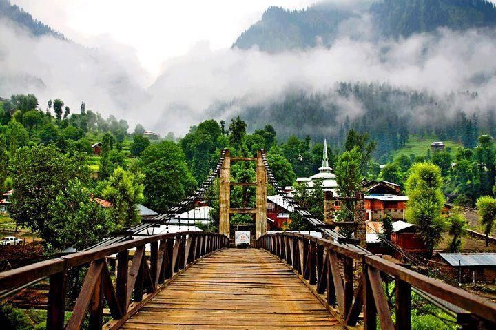
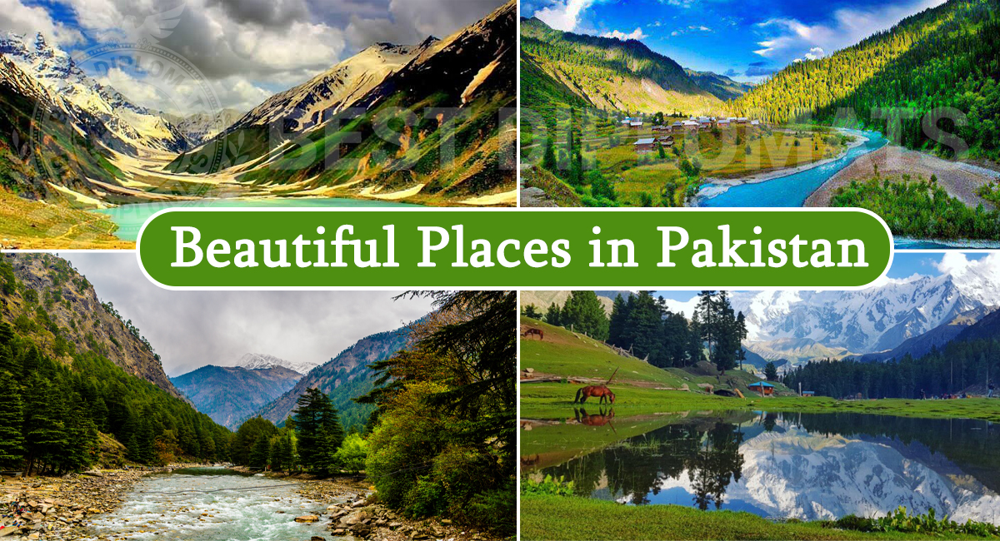

travel is the movement of the people between different geographical locations

travel with all the freenes
we will give 24/7 support,Always with you
travel with affordable prices,budget friendly
Violent extremist groups continue to plot attacks in Pakistan. Terrorist attacks are frequent in Balochistan Province and Khyber Pakhtunkhwa Province (KP), which include the former FATA. Large-scale terrorist attacks have resulted in numerous casualties, and small-scale attacks are frequent. Terrorism and ongoing violence by extremist elements have led to indiscriminate attacks on civilian, as well as local military and police targets. Terrorists may attack with little or no warning, targeting transportation hubs, markets, shopping malls, military installations, airports, universities, tourist attractions, schools, hospitals, places of worship, and government facilities. Terrorists have targeted U.S. diplomats and diplomatic facilities in the past.
travel@gmail.com
+91987654321
@2025